APPROVALS
Allow or deny.
Without switching.
See the exact command before it runs. Approve it, deny it, or send it back to the terminal.
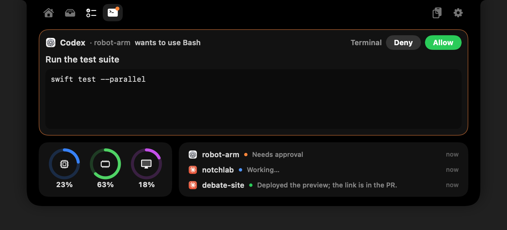
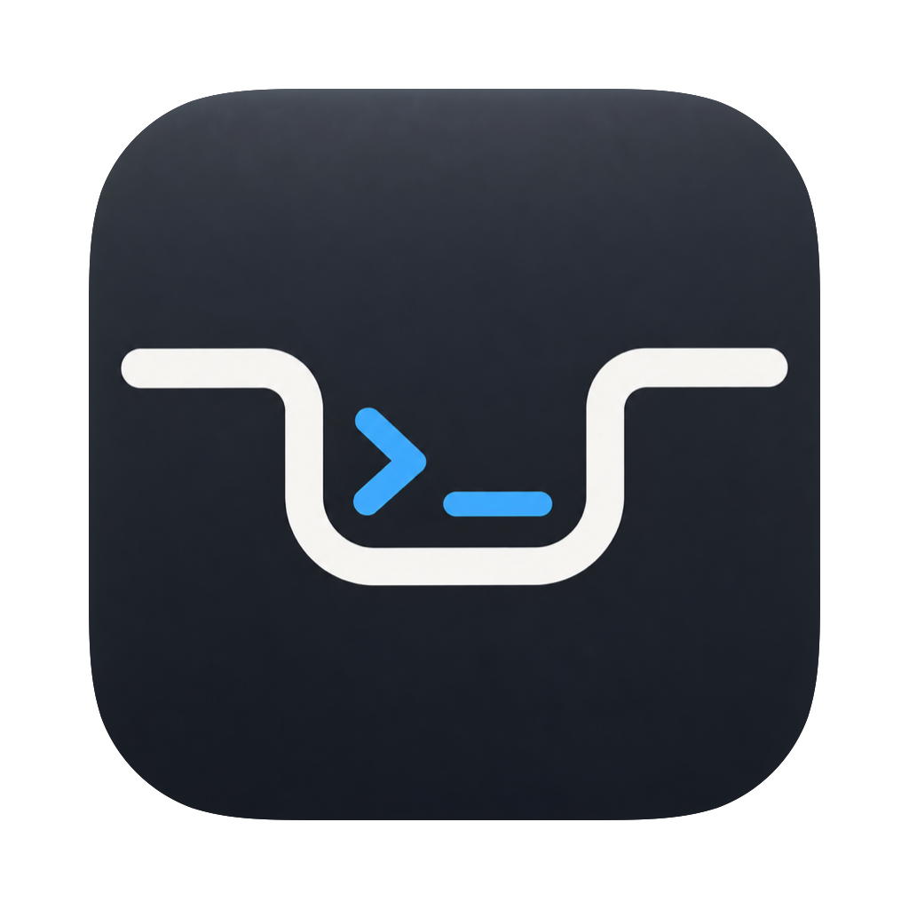
NotchLab.Answer Claude, watch your Mac, jot a note, play your music.
A native workspace tucked into the top of your Mac.
v1.0 · macOS 14+ · Apple silicon · Free
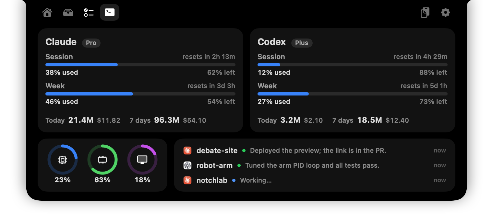
Your limits, your Mac, and every agent session. One glance.
A working copy of the real interface with demo data. Nothing you type or drop leaves your browser.
LESS BACK AND FORTH
Hover to open. Move away to close. NotchLab keeps the things you reach for close, without giving you another window to manage.
When Claude has a question or Codex needs permission, it shows up in the notch. Pick an answer, hit Allow, and the agent keeps going. No hunting for the right terminal.
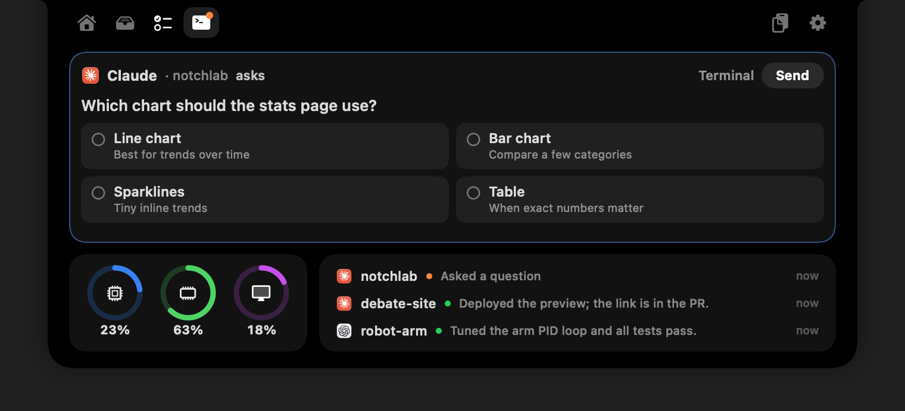
See the exact command before it runs. Approve it, deny it, or send it back to the terminal.

Claude and Codex session and weekly limits, plus today’s and this week’s tokens and cost.
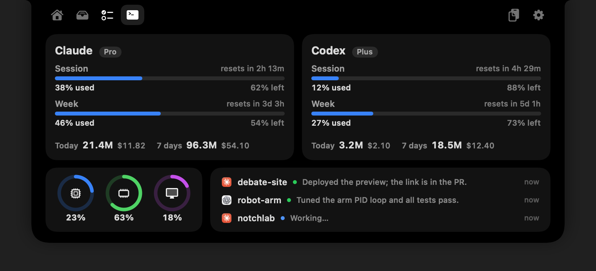
Three live rings sit on the Dev page. Click one to see the full breakdown and the apps working your Mac the hardest. No Activity Monitor required.
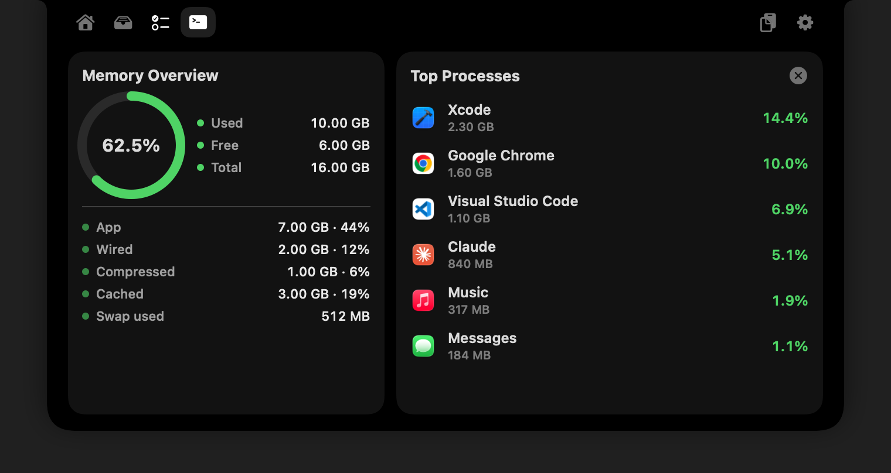
When something needs you, the closed notch stretches just enough to say so. Then it gets out of the way.
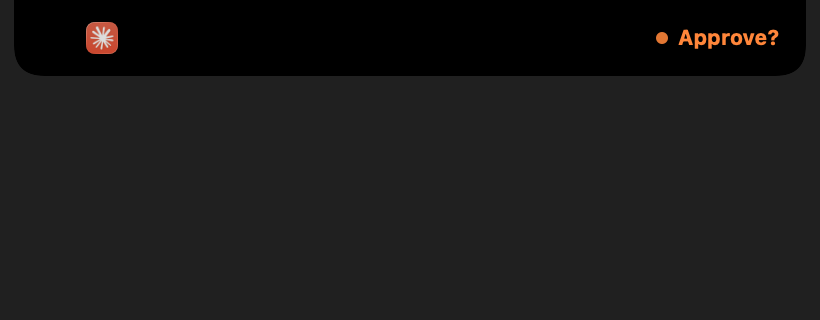
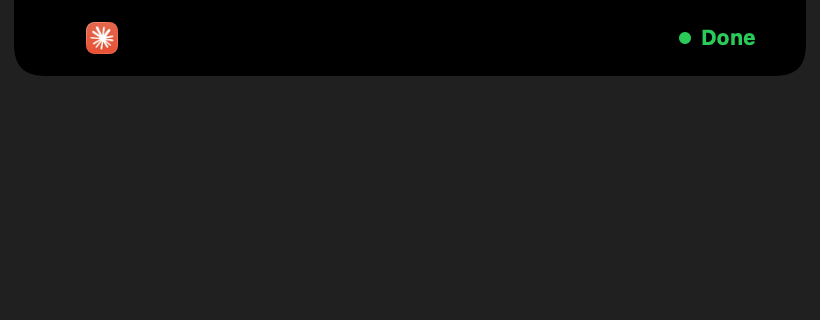
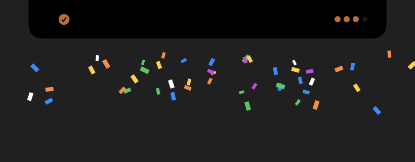
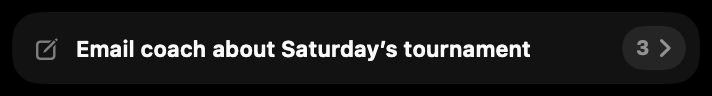
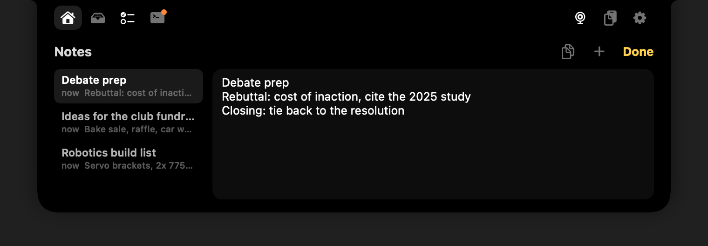
There’s a note field right on the Home page. Type, press Return, and it’s saved. Open the notes panel whenever you want to read, edit, or copy.
The next song. A passing thought. That file you need in a second. Give them a little space up top.
Control whatever’s playing, switch speakers, run a focus timer, flip your VPN, and jot a quick note.
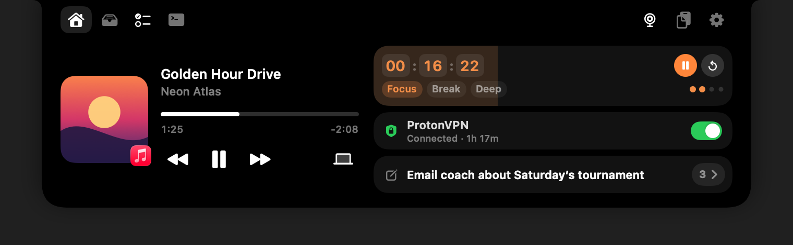
Drop files on the notch, drag them out when you need them, or send them with AirDrop.
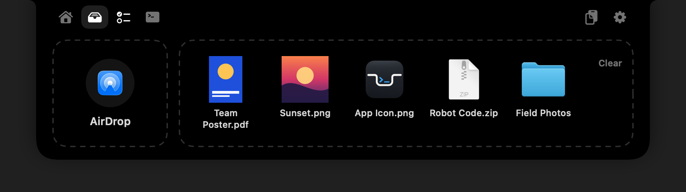
Your Apple Reminders lists. Add, flag, and complete. Synced through iCloud.
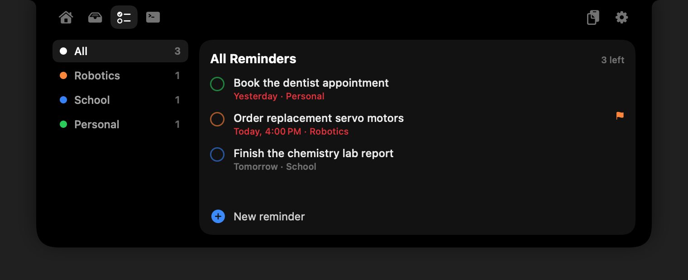
Search your history and favorite what you reuse. Passwords are never saved.
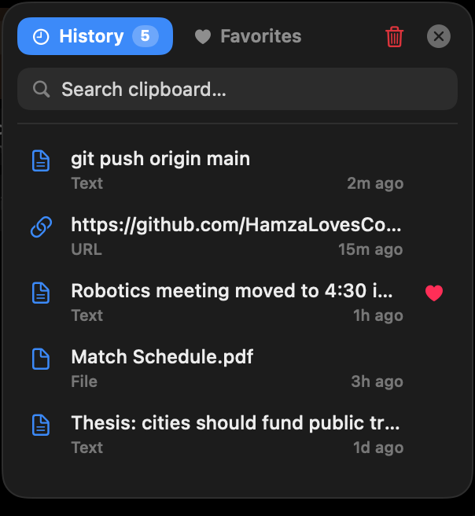
Focus, Break, Deep, or type any time. Session dots fill as you go, and finishing gets confetti.
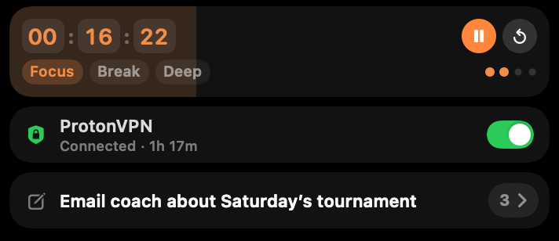
And a few more things
you’ll be glad are there.
A NEW HOME FOR YOUR WORKFLOW
Make the top of your screen your favorite shortcut. Download NotchLab and settle into your flow.
Open the DMG and drag NotchApp into Applications.
Download for Mac v1.0 release notes ↗NotchLab isn’t notarized yet. If macOS can’t verify it, click Done, then go to System Settings → Privacy & Security → Open Anyway next to NotchApp. You only need to do this once.
Open NotchApp and hover over your notch. Turn on Launch at Login in Settings (the gear) so it’s always there.
You’ll need Xcode Command Line Tools with Swift 6 or later. Install the tools with xcode-select --install, then run:
git clone https://github.com/HamzaLovesCoding/NotchLab.git
cd NotchLab
./build.sh --installTHE LITTLE DETAILS
No. On a display without a notch, NotchLab appears as a small pill at the top of the screen. Hover over it to open your workspace.
The current build requires an Apple silicon Mac running macOS 14 or later. Building from source requires Xcode Command Line Tools with Swift 6 or later.
Open the Dev page and click Connect Claude and Connect Codex. NotchLab adds its small notch-hook helper to each agent’s hook settings and leaves the rest of the file alone. Then run /hooks once in Codex to trust it, and restart any sessions that were already open. Prefer to do it by hand? There’s a manual setup in the README. Usage limits work without any setup. Claude questions can be answered in the notch; Codex supports approvals and finished alerts.
The agent waits. Click Terminal to answer there instead, or leave it and the normal terminal prompt comes back after about five minutes. If NotchLab isn’t running, your agents behave exactly as they always do.
Notes, clipboard history, and your file shelf stay on your Mac, and there’s no account or analytics. The one thing NotchLab asks the internet for is your Claude usage limit, checked with Anthropic using the sign-in Claude Code already keeps on your Mac.
Camera and Reminders access are requested when you use those features. Controlling some VPN apps also needs Accessibility access. You can turn on Launch at Login in Settings.